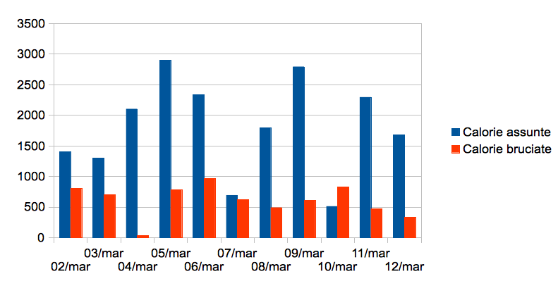

Mandatemi uno zip con il progetto completo al mio indirizzo @uninsubria.it
Realizzare un'applicazione per il tracciamento delle calorie assunte e consumate giorno per giorno.
L'utente apre la home page del sistema (url "/") e inserisce la sua login. Il sistema lo ridirige sulla sua pagina personale. Per esempio, se l'utente ha login "mario", la sua pagina personale ha la url "/users/mario". Sulla pagina personale l'utente visualizza le seguenti informazioni:
| Data | Cibo | Quantità | Calorie |
|---|---|---|---|
| 03/07/2012 | Bistecca | 150 g | 330 kcal |
| 02/07/2012 | Spaghetti | 100 g | 300 kcal |
| 02/07/2012 | Insalata | 50 g | 30 kcal |
L'utente visualizza la sua pagina personale. Una sezione della pagina è intitolata "Che cosa ho mangiato oggi" e permette di scegliere vari tipi di cibo da un menu a tendina. L'utente può scegliere, ad esempio, "spaghetti", inserire in un campo di testo la quantità in grammi, ad esempio 100, e confermare. Il sistema registra il tipo di cibo, la quantità e la data. Il sistema calcola le calorie corrispondenti a questo pasto. Gli elementi della pagina personale (grafico, tabella) vengono aggiornati. La pagina non viene ricaricata; la comunicazione con il server avviene tramite Ajax.
La pagina personale contiene una sezione "Che cosa ho fatto oggi". Analogamente a "Che cosa ho mangiato oggi", si può selezionare un'attività fisica, una durata, e confermare. Il sistema registra l'attività fisica, calcola le calorie bruciate, e aggiorna gli elementi della pagina personale. Il grafico deve mostrare anche le calorie bruciate. Ci deve essere una seconda tabella che mostra le attività fisiche ordinate per data.
Per realizzare i grafici, si può usare una libreria come Elycharts.
Le tabelle dei valori nutrizionali degli alimenti si possono trovare, ad esempio, in questa pagina.
Salvare i dati su tabelle Mysql lato server. I dati devono essere persistenti! Ma non da subito. Affrontate lo sviluppo per gradi; all'inizio è sufficiente conservare i dati in maniera non persistente in JavaScript. In un secondo momento aggiungete la persistenza.
Per facilitare il test, si può aggiungere un elemento "calendario" alle sezioni "Che cosa ho mangiato/che cosa ho fatto oggi" per poter inserire dati in altri giorni e vedere che il grafico si aggiorni correttamente.
Sviluppate prima il dominio, poi l'interfaccia utente!